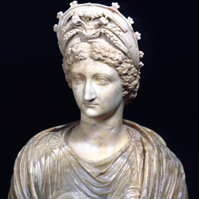
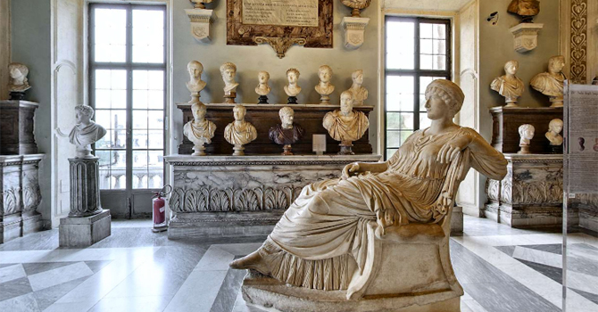

Ritratto di Livia Drusilla
Nome: Ritratto di Livia Drusilla
Soggetto: Livia Drusilla Wikipedia
Autore: Sconosciuto
Luogo: Musei Capitolini GeoNames
Data: Età tiberiana (14-37 d.C.)
Tipologia: Scultura
Dimensioni: 96 cm
Materiale: Marmo
Inventario: inv. MC0444
XML/DC Scopri di più

Sala degli Imperatori
Sono allineati su mensole marmoree lungo le pareti ritratti di imperatori ed imperatrici o di personaggi dell'età imperiale, non sempre di sicura attribuzione. La raccolta documenta lo sviluppo della ritrattistica romana di età imperiale fino al periodo tardo-antico.
Maggiori Informazioni